|
【サバ州・コタ キナバル】
東マレーシア・サバ(SABAH)州の首都・コタ・キナバル(Kota kinabalu)の訪問は今度で3回目ですが、私とこの街とのつながりは18年前にさかのぼります。
最初の訪問は、東マレーシアから初めての50MHzの運用となった、1980年11月のDX-Pediでした。
この時は地元の局(9M6BE、9M6MA、9M6MO)のコールサインを使用する、いわゆる「ゲストオペ」として運用し、多くのJA局とQSO出来ました。
当時の様子は"50MHz DX Pedition"のコーナーで紹介してあります。
VS5TX、JA1BK等と共に運用したこの時の訪問でフレンドリーで暖かいマレーシアの人々と接し、
この国を強く印象付けられました。
2度目の訪問は今年(1998年)の2月、UK(英国)のCDXCのグループと一緒に9M0C(スプラトリー)を運用のため、
このコタキナバルに立ち寄った時です。
18年前に世話になった9M6MAや現在はクアラルンプールに住んでいる9M6MOなどが遠路駆けつけてくれ、
久しぶりの再会に大感激でした。
２週間のスプラトリーでのDX Pediの運用終了後、コタキナバルで運用する機会も無く帰国してしまいましたが、
再訪問を見据えて9M6のライセンスの申請を手配してきました。
そして、今回の運用となった訳ですが、当然の事ながらコタキナバルとの付き合いはいずれもHAMの運用が関連したものでした。
【ボルネオの楽園サバ】

高台から眺めたコタ キナバルの中心街
【9M6JUの免許取得】
今年(1998年)の2月、スプラトリーで9M0Cを運用した帰途、9M6/JA1RJUの免許申請を行ったサバ(SABAH)州のJTM(Jabatan Telekom Malaysia)に立ち寄り、
9M6での"恒久的"な局免許の申請を打診したところ、申請書が揃えば「9M6」の個人コールが貰えそうな雰囲気でした。
さっそく、担当者から免許申請書一式を受け取り、帰国前の短い時間を書類作成に走りまわりました。
提出する書類はそれほど多くはなかったのですが、書類は当然のことながら外国人向けには作られていないので全て「マレー語」。
これは9M0Cのメンバーだった9M6SU(Donald)と地元の局に「代筆」をお願いすることで解決。
まず最初は局の申請書に添付する公的機関の「身元証明書」を貰うことでした。
パスポートと申請書を持ってダウンタウンのメインストリート沿いにある"駐在所"のような事務所に出向き、申請書(誓約書)を提出。 サインと直径5cmほどの証明印を貰い、若干の手数料を支払い、無事終了。
マレー語の申請書の記入は、仕事の関係で申請書を書き慣れている9M6GYのXYL・9M6JY(Stella)が引き受けてくれました。
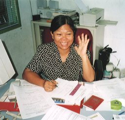
書類の作成に協力してくれた9M6JY(Stella)
申請書には希望するコールサインを3通り書き込む事が出来る様になっています。
これはどこかの国の"郵政省"とは違って親切。
地元の局にたずねて、まだ未使用と思われる「9M6JU」をさっそく第一希望の欄に書き込みました。
マレーシアでは自分のイニシアルをコールサインとして希望する局が多いのですが、幸いなことに「U」で始まるイニシアルになる名前は少ないのか、
空いているようでした。「9M6JU」の割り当ては問題なさそうでしたが、一応「9M6KO(イニシアル)」と「9M6RJU」なども第2、第3希望で書き込みました。
3文字のコールサインはクラブ局に使われているようで、個人に対して割り当てられる事はほとんどないようです。
申請書類一式を揃えて、JTMに提出して帰国。
この時点で申請書は完璧と思われたのですが、帰国してからがいろいろ大変でした。
帰国してから数日して、マレーシアのJTMの担当者から免許申請についての問い合わせがE-Mailで届きました。
内容は、先に提出された申請書に加えて新たに日本の「地元クラブの証明書」の提出、マレーシア・サバ州の「地元クラブの会員」になる事が必要というものでした。
さっそく日本の"地元クラブ"、JARLから会員証明書を発行して貰いました。
マレーシアの地元クラブの入会は、JTMから紹介されたSARS(Sabah Amateur Radio Society)の担当者、9M6LKとE-MAILを通じて、
入会の手続きをお願いすることにしました。
SARSは現在、会員180人ほどのサバ州最大のアマチュア無線局の団体。
サバ州にはこの他にBARS(Borneo Amateur Radio Society)という団体があり、こちらの会員数は約40人程度とのこと。
SARSに提出した書類の方がJTMへの申請書よりも多く、途中で投げ出したくなる心境でしたが、担当者の9M6LKから「面倒でも投げ出したりしないで、最後まで続ける様に...」、
と、こちらの気持ちを見透かしているような？MAILに"励まされ"ながら、必要書類を準備して送付しました。
こうしてようやく6月中旬にSARSのTRANSMITTING MEMBER(Outstation)として登録されました。
この時点ではまだコールサインは外国人に通常割り当てられる、自国のコールサインに「9M6/」を付けた「9M6/JA1RJU」でした。
必要なのはテンポラリーのコールサインではなく「9M6JU」なのだが...。
9月の上旬に、SARSの9M6LKから会員証(IDカード)と共に局免許が送られてきました。
JTMはマレーシアの常置場所になっている個人の住所ではなく、私宛の免許証をSARSを窓口にして送ってくれたらしい。
8月5日付の免許証にはコールサイン「9M6JU」とタイプされていました。(ヤレヤレ...)
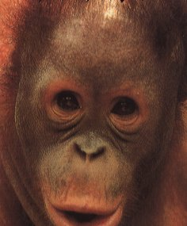
後で聞いた話では、マレーシアでは今年(1998年)から、外国人には「9M6**」のコールサインではなく、
「9M*/*****」式のコールサインで免許しているとのこと。
マレーシアでの外国人の免許は「自国の局免許」で申請出来ますが、9M2(西マレーシア全域)、9M6(東マレーシア・サバ州)、
9M8(東マレーシア・サラワク州)は、それぞれ別の免許申請が必要です。
【9M6JUの運用】
東マレーシアの首都・コタ・キナバルからの運用は11月16日から11月22日の日程で行われました。
滞在初日の16日は、コタ・キナバル市内の9M6SU宅に泊まったため、HF、6mのアンテナも無く、
本格的な運用はホテルに移った17日の午後になってからでした。
今回の運用場所となったホテルは、コタ・キナバルの中心部から20Kmほど南下した所にある、
南シナ海に面した海岸沿いのリゾート・ホテルでした。
椰子の木と熱帯の木立に囲まれたこの閑静なリゾートホテルは、ハムを運用するには絶好の環境。
ホテルのオーナーの話では、時々外国のハムが訪れてきて運用しているとのことでした。
ホテルの裏側の中庭に2棟のバンガローがあり、その一軒を借りここから5日間運用しました。
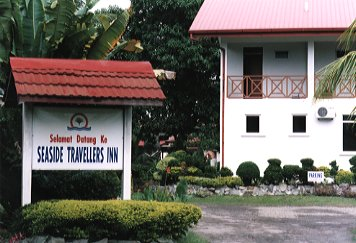
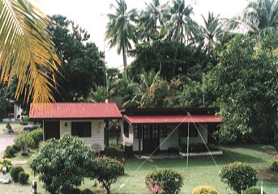
運用場所となったリゾートホテル正面と中庭のバンガロー(右側)
ホテルにはコタ・キナバルのローカル局が応援に駆けつけてくれ、荷ほどきも終わらない内に、
アッと言う間に50MHzの4EL・HB9CVとHF用のG5RV(マルチバンド・ダイポール)を上げてくれました。
FT-847のテストのために50MHzのアンテナを接続してスィッチを入れた途端にJAから"ドッ"と呼ばれ、ビックリ！
オペレートの準備も出来ていない状態で、本格運用まで手間取り、早々と呼んで頂いた局には申し訳けなかったのですが、
しばらくお待ち頂く事になりました。
この日のJAは、05:51zから08:47zまで入感、一時間ほど遅れて入感したホンコンのVR2LCとのQSOで初日の6mは終了。
11月17日は「しし座流星群」でマスコミも大騒ぎしていたようでしたが、出発前に西マレーシアの9M2NK・中村さんとMSにトライしてみる約束だったので、
9M2のTVが終了する時間を待って、50.107MHzで9M2NKをコールしてみました。
17:39zに数秒間「9M2NK...」の信号を確認出来ただけで残念ながらQSOは出来ませんでした。
海外まで来てMSをトライしたのは初めてでした。
この日、9M2NKはペナン島の9M2TOとMSでQSOしたとの事。
マレーシアは2月頃までは雨季で日中は青空が顔を出すのですが、夕方から激しいスコール。
夜空は厚い雲に覆われ、楽しみにしていた"満天の星空"を眺める事は出来ませんでした。
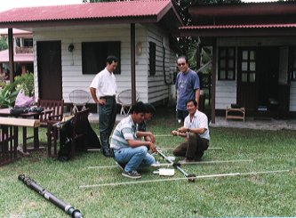
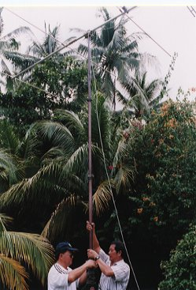
ローカルの各局が集まってアンテナを設置してくれた／6mの4EL

(左から)9W6EI,9M6LW,9M6LK,9M6GY,9M6JU(JA1RJU),9M6SU
翌18日は朝から本格的な運用。午前中はアンテナを東方向に向け太平洋方面にトライしてみるものの、
オープンしている兆候は見られません。
JA方向がオープンする前には49.750MHzのBY(中国)のTVが上昇してくるので、これは今回も良い目安となりました。
スプラトリーで9M0Cを運用した時にもここと同じように良い目安でした。
JAが入感する時間は、毎日03:00z(日本時間12:00JST、マレーシア時間11:00LMT)頃からで、
コンデションは東日本から西日本へ動いて行くのも9M0の時と同じでした。
ここでもJA7/8方面に対するオープンは時間的に短く、コンデションの移り変わりも早く感じられました。
反対に、西日本のJA4-JA6は、開き始めは少し遅いものの、コンデションは長続きして、呼ぶ局がいなくなったのでフェードアウトしたのかと思っていると、
JA6YBRの宮崎のビーコンだけが、ガンガン入感していると言う状態が何度も有りました。
今回も時を同じくしてDX Pediが行われていたプラタス(Pratas Is)のBQ9Pは、
9M6では安定に聞こえていて18日にQSO出来ました。
9M6からBQ9PとJA本土が良く聞こえている時にBQ9PからはJR6(沖縄)だけが開いているのです。
この時にBQ9PがQSOしている沖縄は、9M6では全く聞こえていないのです。
BQ9Pが沖縄とQSOしている時に、BQ9Pを狙ってCQを出すJA本土の局が同じ周波数で同時に聞こえているといった事もありました。
お互いにQRMになる訳でもないので問題はないのですが、双方が入感する9M6で聞いていると"おかしな"ものでした。
9M6からの沖縄は深夜に少しオープンした程度でほとんど入感する事はなく、日中に毎日聞こえていたJA本土のコンデションに比べると、
ここでも本土と沖縄のコンデションの開き方の違いが判りました。
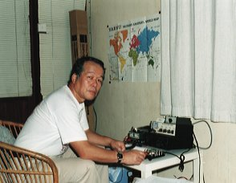
9M6JUを初運用するJA1RJU
日中は6m、早朝、夜間はHF帯の運用と、1台のFT-847をフル稼動して、HFも80mから10mまで運用しました。
毎日の様に昼頃から6mがオープンしたため、6mに掛かり切りで、JAが主体になる日中のHF帯にはほとんど出ることはありませんでした。
22日にQRTするまで、6mでのQSO数は600を超えました。 JA8も数局ながらQSO出来、6mではJA全エリアとQSO出来ました。
JA以外では、プラタスのBQ9P、N7ET/DU7、HL's、VR2'sと近場だけで、期待していた中近東などの西方向はパイロットとなる信号も無く、
コンデションの状態を知ることは出来ませんでした。
次の機会には、ここから海越えのヨーロッパ、アフリカ方面でも狙ってみようかと考えています。
コタ キナバルの東側には標高4,100mを超える、キナバル山があるためハワイなどの太平洋方面への伝搬は不利なのかも知れません。
22日の朝には荷造りのため、HFのアンテナを撤収しました。
50.115MHzの"CQ Beacon"は昼近くまで送信しましたが、6mのオープンの時間にはまだ早く、
結局QSO出来ないまま02:00zには4EL HB9CVも撤収。
この6mのHB9CVは、アンテナの建設から撤去まで手伝ってくれた9M6GY・Godfreyにプレゼントしました。
彼はXYLの9M6JY共々、近いうちにIC-706(100W)で6mにQRVしてくる事でしょう。


FT-847(RIGの上はMFJのHFアンテナチューナー)/4EL HB9CVとG5RVアンテナ
【9M6でのテレビ障害】
マレーシアでは50MHz帯に近接した48MHz帯をテレビ放送に使っているため、テレビからの妨害(テレビへの妨害)で、50MHzの運用が難しいのでは？と良く言われますが、
少なくとも、今回の運用場所ではテレビの電波から妨害を受けることも、TVIの障害もありませんでした。
運用したホテルは、UHFとCATVを使っていたのも幸いしていた様です。
コタ キナバルから南に100Km以上離れたラブアン(Labuan)島から良く出てくる、
9M6NA(9M2NK)中村さんは、近所のテレビにTVIの障害があったと報告していましたが、
48MHz帯の弱い電波を直接受信しているエリアでは50MHzからのTVIの障害も当然考えられます。
48MHz帯を聞いてみると、確かに48.240、250、260MHzには、JAでも受信することが出来る、
あのキャリアが聞こえます。
コタ・キナバルでは48.260MHzが一番強く聞こえますが、受信機が壊れるほど強いと言うこともなく、
時間によっては、JAで聞いている程度の強さの時もありました。
バンドの中にバズが聞こえる事もなく、JAで聞く"6mバンド"と変わりはありません。
西マレーシアのクアラルンプールでは48.240MHzが使われていて、ここからQRVしている9M2NK・中村さんはこのTV局からの妨害を受けるため、
テレビの放送が行われている時間帯は、バズの少ない50.107MHzのスポットの周波数でしか出られないと言っています。
送信所に近接しているのかも知れません。
JAに良く聞こえてくる、48.250MHzは、DU(フィリピン)あたりではないかと言われていますが、
はっきりした事は不明です。
最近ではマレーシアでもUHFやサテライト経由によるTVも盛んになってきている様で、
ケーブルテレビ(CATV)による放送も普及してきています。
テレビの妨害(TVI)もだんだん少なくなってくることでしょう。
地元の局に50MHzとテレビの周波数の事を訊ねてみましたが、普段50MHzを使っていないせいか、
この問題に"明快な答え"を得る事は出来ませんでした。
【ホテル周りの環境】
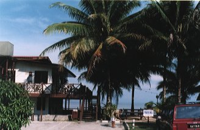
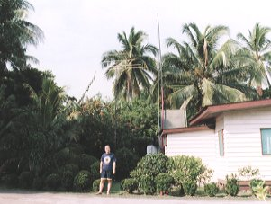
ホテルの裏にあるレストラン(左の建物)／ANTの前で9M6JU
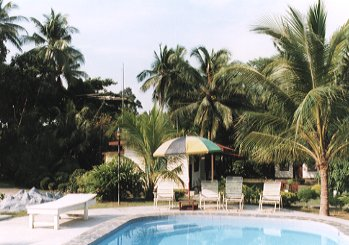
バンガロー横の小さなプールではいつも欧米系
の若い？女性が4、5人"甲羅乾し"をしていた
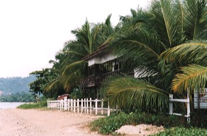
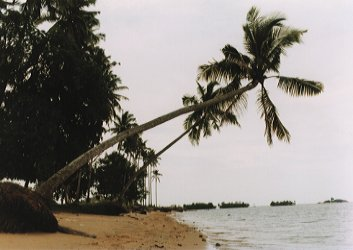
ホテルの裏に出ると椰子の木と広い砂浜
|